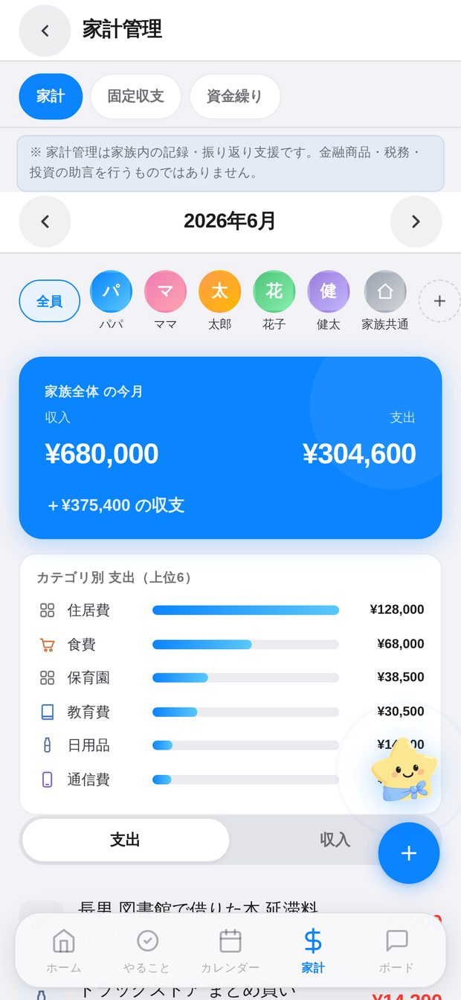
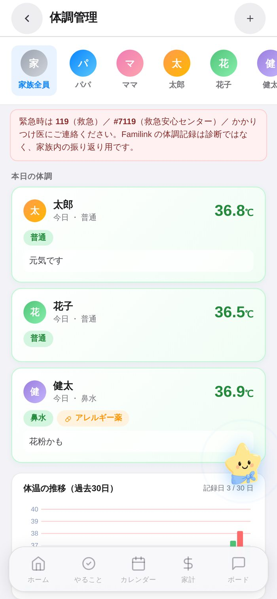
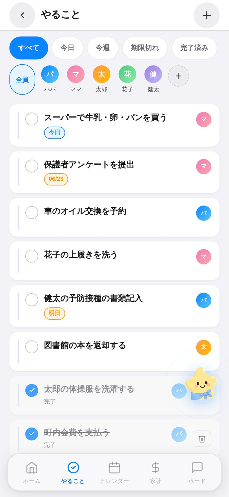
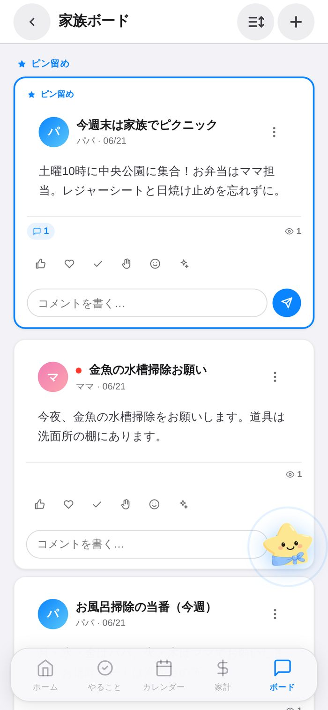
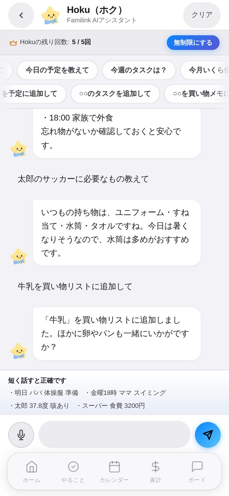

家族のカレンダー
月／週／リスト表示、メンバー別の色分け、繰り返し予定とリマインドまで。
Home / Product
家族をチームに。
予定も、やることも、家計も、ひとつに。共働き・子育て世代のための家族管理アプリ。毎日の「言った・言わない」をなくして、家族の時間をもっと大切に。



Features
家族の毎日に必要な機能を、ひとつのアプリに。
月／週／リスト表示、メンバー別の色分け、繰り返し予定とリマインドまで。
月次の収支とカテゴリ別の内訳をひと目で。家族で共有できます。

体温・服薬・体調を家族で記録。あとから振り返れます。

家族のタスクを担当・期限つきで。漏れなく回せます。

お知らせ・メモを家族みんなで共有。連絡が一か所に。

予定・やること・買い物を、話しかけるだけでサポート。
AI Guide — Hoku
予定の登録も、買い物メモも、やることの整理も。AIガイド「Hoku」に話しかけるだけ。家族のいろんなシーンに、いろんな顔でそっと寄り添います。